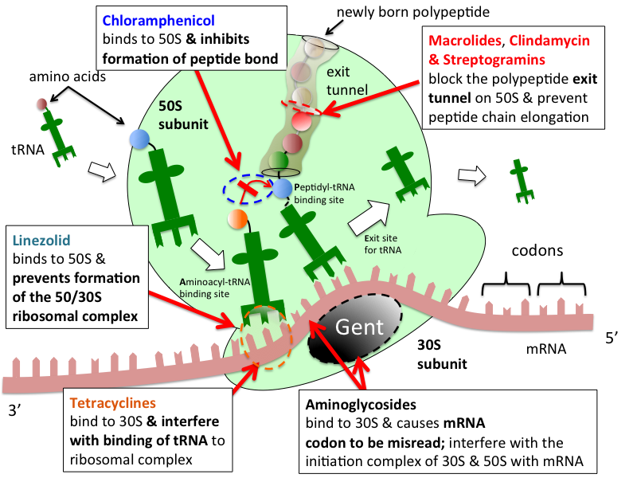
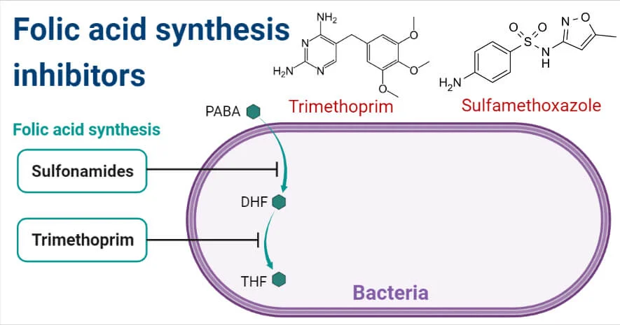
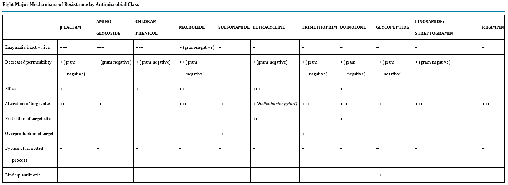
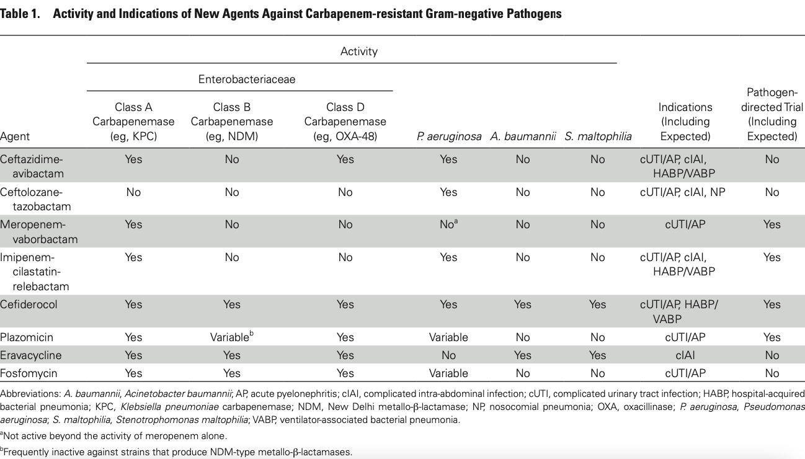
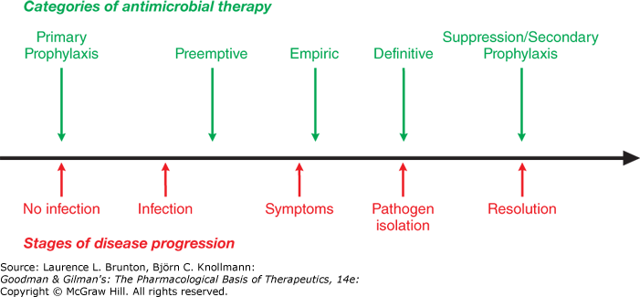

<!DOCTYPE html>
<html lang="en">
  <head>
    <meta charset="utf-8" />
    <meta name="viewport" content="width=device-width, initial-scale=1.0, maximum-scale=1.0, user-scalable=no" />

    <title>Treatment of Bacterial and Viral Infections</title>
    <link rel="stylesheet" href="dist/reveal.css" />
    <link rel="stylesheet" href="dist/theme/blood.css" id="theme" />
    <link rel="stylesheet" href="plugin/highlight/zenburn.css" />
	<link rel="stylesheet" href="css/layout.css" />
	<link rel="stylesheet" href="plugin/customcontrols/style.css">

	<link rel="stylesheet" href="plugin/reveal-pointer/pointer.css" />


    <script defer src="dist/fontawesome/all.min.js"></script>

	<script type="text/javascript">
		var forgetPop = true;
		function onPopState(event) {
			if(forgetPop){
				forgetPop = false;
			} else {
				parent.postMessage(event.target.location.href, "app://obsidian.md");
			}
        }
		window.onpopstate = onPopState;
		window.onmessage = event => {
			if(event.data == "reload"){
				window.document.location.reload();
			}
			forgetPop = true;
		}

		function fitElements(){
			const itemsToFit = document.getElementsByClassName('fitText');
			for (const item in itemsToFit) {
				if (Object.hasOwnProperty.call(itemsToFit, item)) {
					var element = itemsToFit[item];
					fitElement(element,1, 1000);
					element.classList.remove('fitText');
				}
			}
		}

		function fitElement(element, start, end){

			let size = (end + start) / 2;
			element.style.fontSize = `${size}px`;

			if(Math.abs(start - end) < 1){
				while(element.scrollHeight > element.offsetHeight){
					size--;
					element.style.fontSize = `${size}px`;
				}
				return;
			}

			if(element.scrollHeight > element.offsetHeight){
				fitElement(element, start, size);
			} else {
				fitElement(element, size, end);
			}		
		}


		document.onreadystatechange = () => {
			fitElements();
			if (document.readyState === 'complete') {
				if (window.location.href.indexOf("?export") != -1){
					parent.postMessage(event.target.location.href, "app://obsidian.md");
				}
				if (window.location.href.indexOf("print-pdf") != -1){
					let stateCheck = setInterval(() => {
						clearInterval(stateCheck);
						window.print();
					}, 250);
				}
			}
	};


        </script>
  </head>
  <body>
    <div class="reveal">
      <div class="slides"><section  data-markdown><script type="text/template"><!-- .slide: class="drop" -->
<div class="" style="position: absolute; left: 0px; top: 0px; height: 900px; width: 1600px; min-height: 900px; display: flex; flex-direction: column; align-items: center; justify-content: center" absolute="true">

# Treatment of Bacterial and Viral Infections

Reference: Hooper, David C., et al. "Treatment and Prophylaxis of Bacterial Infections." Harrison's Principles of Internal Medicine, 21e Eds. Joseph Loscalzo, et al. McGraw Hill, 2022, https://accessmedicine.mhmedical.com/content.aspx?bookid=3095&sectionid=263548377.
</div></script></section><section  data-markdown><script type="text/template"><!-- .slide: class="drop" -->
<div class="" style="position: absolute; left: 0px; top: 0px; height: 900px; width: 1600px; min-height: 900px; display: flex; flex-direction: column; align-items: center; justify-content: center" absolute="true">

# 重點

* 抗藥性
* 副作用
* 禁忌症
* 暴露後預防
</div></script></section><section  data-markdown><script type="text/template"><!-- .slide: class="drop" -->
<div class="" style="position: absolute; left: 0px; top: 0px; height: 900px; width: 1600px; min-height: 900px; display: flex; flex-direction: column; align-items: center; justify-content: center" absolute="true">

# Antimicrobial Agent
</div></script></section><section  data-markdown><script type="text/template"><!-- .slide: class="drop" -->
<div class="" style="position: absolute; left: 0px; top: 0px; height: 900px; width: 1600px; min-height: 900px; display: flex; flex-direction: column; align-items: center; justify-content: center" absolute="true">

## Mechanism of Action


 <span style="font-size:small">Ref: 10.1038/s41581-019-0150-7</span>
</div></script></section><section  data-markdown><script type="text/template"><!-- .slide: class="drop" -->
<div class="" style="position: absolute; left: 0px; top: 0px; height: 900px; width: 1600px; min-height: 900px; display: flex; flex-direction: column; align-items: center; justify-content: center" absolute="true">

<iframe width="1120" height="630" src="https://www.youtube.com/embed/IVBCrzjOl40" title="YouTube video player" frameborder="0" allow="accelerometer; autoplay; clipboard-write; encrypted-media; gyroscope; picture-in-picture; web-share" allowfullscreen></iframe>
</div></script></section><section  data-markdown><script type="text/template"><!-- .slide: class="drop" -->
<div class="" style="position: absolute; left: 0px; top: 0px; height: 900px; width: 1600px; min-height: 900px; display: flex; flex-direction: column; align-items: center; justify-content: center" absolute="true">

* Multiple essential components of bacterial cell structures and metabolism have been the targets of antibacterial agents used in clinical medicine
	* In general, targets have been chosen because they either **do not exist** in mammalian cells and physiology or are **sufficiently different** from their bacterial counterparts to allow selective bacterial targeting. 
* The interaction of an agent with its target results in either inhibition of bacterial growth and replication (<mark>**bacteriostatic effect**</mark>) or bacterial killing (<mark>**bactericidal effect**</mark>). 
* Treatment with bacteriostatic agents is effective when the patient’s **host defenses** are sufficient to contribute to eradication of the infecting pathogen. 
* In patients with **impaired host defenses** (e.g., neutropenia) or infections at **body sites with impaired or limited host defenses (e.g., meningitis and endocarditis)**, <mark>**bactericidal**</mark> agents are generally preferred.
</div></script></section><section  data-markdown><script type="text/template"><!-- .slide: class="drop" -->
<div class="" style="position: absolute; left: 0px; top: 0px; height: 900px; width: 1600px; min-height: 900px; display: flex; flex-direction: column; align-items: center; justify-content: center" absolute="true">

### INHIBITION OF CELL WALL SYNTHESIS

* The bacterial cell wall, which is external to the cytoplasmic membrane and has **no counterpart in mammalian cells**, protects bacterial cells from **lysis** under low osmotic conditions. 
	* The cell wall is a cross-linked peptidoglycan composed of a polymer of alternating units of **_N_-acetylglucosamine (NAG)** and **_N_-acetylmuramic acid (NAM)**, four-amino-acid stem peptides linked to each NAM, and a peptide cross-bridge that links adjacent stem peptides to form a netlike structure.
* Several steps in **peptidoglycan synthesis** are targets of antibacterial agents. 
	* Inhibition of cell wall synthesis generally results in a **bactericidal** effect that is linked to cell lysis
</div></script></section><section  data-markdown><script type="text/template"><!-- .slide: class="drop" -->
<div class="" style="position: absolute; left: 0px; top: 0px; height: 900px; width: 1600px; min-height: 900px; display: flex; flex-direction: column; align-items: center; justify-content: center" absolute="true">

* In gram-positive bacteria the peptidoglycan is the most external cell structure
* In gram-negative bacteria, an **asymmetric lipid outer membrane** is external to the peptidoglycan and contains diffusion channels called **_porins_**. 
	* The space between the outer membrane and the peptidoglycan and cytoplasmic membrane is referred to as the **_periplasmic space_**. 
	* Most antibacterial drugs enter the gram-negative bacterial cell through a **porin channel**, since the outer membrane is a major **diffusion barrier**. 
* Although the peptidoglycan layer is thicker in gram-positive (20–80 nm) than in gram-negative (1 nm) bacteria, peptidoglycan itself constitutes only a limited diffusion barrier for antibacterial agents.
</div></script></section><section  data-markdown><script type="text/template"><!-- .slide: class="drop" -->
<div class="" style="position: absolute; left: 0px; top: 0px; height: 900px; width: 1600px; min-height: 900px; display: flex; flex-direction: column; align-items: center; justify-content: center" absolute="true">

#### β-Lactams

* Include penicillins, cephalosporins, monobactams, and carbapenems
* Target **transpeptidase enzymes** (also called ***penicillin-binding proteins or PBPs***) involved in the stem-peptide cross-linking step 
* **Inhibitors of β-lactamases**—bacterial enzymes that can degrade β-lactams—are used in combination with some β-lactams to expand their spectrum of activity.
</div></script></section><section  data-markdown><script type="text/template"><!-- .slide: class="drop" -->
<div class="" style="position: absolute; left: 0px; top: 0px; height: 900px; width: 1600px; min-height: 900px; display: flex; flex-direction: column; align-items: center; justify-content: center" absolute="true">

#### Glycopeptides

* Including **vancomycin** and **teicoplanin**
* Bind the two **terminal D-alanine residues** of the stem peptide, hindering the glycosyltransferase involved in polymerizing NAG–NAM units as well as transpeptidases. 
	* Vancomycin also binds to the lipid II intermediate that delivers cell wall precursor subunits. 
	* The additional binding of teicoplanin to the bacterial cytoplasmic membrane contributes to their **increased potency**.
</div></script></section><section  data-markdown><script type="text/template"><!-- .slide: class="drop" -->
<div class="" style="position: absolute; left: 0px; top: 0px; height: 900px; width: 1600px; min-height: 900px; display: flex; flex-direction: column; align-items: center; justify-content: center" absolute="true">

#### Fosfomycin

* Interrupt enzymatic steps in the production of peptidoglycan precursors in the **cytoplasm**
</div></script></section><section  data-markdown><script type="text/template"><!-- .slide: class="drop" -->
<div class="" style="position: absolute; left: 0px; top: 0px; height: 900px; width: 1600px; min-height: 900px; display: flex; flex-direction: column; align-items: center; justify-content: center" absolute="true">

### INHIBITION OF PROTEIN SYNTHESIS

* Most inhibitors of bacterial protein synthesis target bacterial **ribosomes**, whose difference from eukaryotic ribosomes allows selective antibacterial action. 
* Some inhibitors bind to the **30S** ribosomal subunit and others to the **50S** subunit. 
* Most protein synthesis–inhibiting agents are **bacteriostatic**
	* Aminoglycosides are an exception and are **bactericidal**
</div></script></section><section  data-markdown><script type="text/template"><!-- .slide: class="drop" -->
<div class="" style="position: absolute; left: 0px; top: 0px; height: 900px; width: 1600px; min-height: 900px; display: flex; flex-direction: column; align-items: center; justify-content: center" absolute="true">


</div></script></section><section  data-markdown><script type="text/template"><!-- .slide: class="drop" -->
<div class="" style="position: absolute; left: 0px; top: 0px; height: 900px; width: 1600px; min-height: 900px; display: flex; flex-direction: column; align-items: center; justify-content: center" absolute="true">

### INHIBITION OF BACTERIAL METABOLISM

* Available inhibitors (antimetabolites) target the pathway for **synthesis of folate**, which is a cofactor in a number of one-carbon transfer reactions involved in the synthesis of some nucleic acids, including the pyrimidine **thymidine and all purines (adenine and guanine)**, as well as some amino acids (methionine and serine) and acetyl coenzyme A. 
* The selective antibacterial effect stems from the **inability of mammalian cells to synthesize folate**; they depend instead on exogenous sources. 
* Antibacterial activity may be reduced in the presence of **high exogenous concentrations of the end products of the folate pathway** (e.g., thymidine and purines) that may occur in some infections, resulting from **local breakdown of leukocytes and host tissues**.
</div></script></section><section  data-markdown><script type="text/template"><!-- .slide: class="drop" -->
<div class="" style="position: absolute; left: 0px; top: 0px; height: 900px; width: 1600px; min-height: 900px; display: flex; flex-direction: column; align-items: center; justify-content: center" absolute="true">


</div></script></section><section  data-markdown><script type="text/template"><!-- .slide: class="drop" -->
<div class="" style="position: absolute; left: 0px; top: 0px; height: 900px; width: 1600px; min-height: 900px; display: flex; flex-direction: column; align-items: center; justify-content: center" absolute="true">

### INHIBITION OF DNA AND RNA SYNTHESIS OR ACTIVITY
</div></script></section><section  data-markdown><script type="text/template"><!-- .slide: class="drop" -->
<div class="" style="position: absolute; left: 0px; top: 0px; height: 900px; width: 1600px; min-height: 900px; display: flex; flex-direction: column; align-items: center; justify-content: center" absolute="true">

#### Quinolones

* The first agent in the class: nalidixic acid
* Fluorinated derivatives (fluoroquinolones): norfloxacin, **ciprofloxacin**, levofloxacin, **moxifloxacin**, **gemifloxacin**, and delafloxacin
* Interact with **DNA gyrase** and **DNA topoisomerase IV**, which alter DNA topology → trap enzyme–DNA complexes → block movement of the DNA replication apparatus → lethal double-strand breaks in DNA → **bactericidal** activity
	* The structures of the mammalian enzymes are sufficiently different from those of the bacterial enzymes that quinolones have substantially selective antibacterial activity.
</div></script></section><section  data-markdown><script type="text/template"><!-- .slide: class="drop" -->
<div class="" style="position: absolute; left: 0px; top: 0px; height: 900px; width: 1600px; min-height: 900px; display: flex; flex-direction: column; align-items: center; justify-content: center" absolute="true">

#### Rifamycins

* Rifampin, rifabutin, and rifapentine are semisynthetic derivatives of **rifamycin B**
* Bind the β subunit of bacterial **RNA polymerase**, thereby blocking elongation of mRNA. 
* Their action is highly selective for the bacterial enzyme over mammalian RNA polymerases.
</div></script></section><section  data-markdown><script type="text/template"><!-- .slide: class="drop" -->
<div class="" style="position: absolute; left: 0px; top: 0px; height: 900px; width: 1600px; min-height: 900px; display: flex; flex-direction: column; align-items: center; justify-content: center" absolute="true">

#### Metronidazole

* Metronidazole is a synthetic nitroimidazole with activity limited to **anaerobic bacteria** and certain **anaerobic protozoa**. 
* Reduction of its nitro group by the **electron-transport system** in anaerobic bacteria produces reactive intermediates that damage DNA and result in **bactericidal** activity. 
* Selective antibacterial activity because the reducing activity needed to produce active derivatives is generated only by bacterial and not mammalian enzymes.
</div></script></section><section  data-markdown><script type="text/template"><!-- .slide: class="drop" -->
<div class="" style="position: absolute; left: 0px; top: 0px; height: 900px; width: 1600px; min-height: 900px; display: flex; flex-direction: column; align-items: center; justify-content: center" absolute="true">

### DISRUPTION OF MEMBRANE INTEGRITY

* The integrity of the bacterial cytoplasmic membrane—and, in gram-negative bacteria, the outer membrane—is important for bacterial viability. 
* Two **bactericidal** drugs have membrane targets.
</div></script></section><section  data-markdown><script type="text/template"><!-- .slide: class="drop" -->
<div class="" style="position: absolute; left: 0px; top: 0px; height: 900px; width: 1600px; min-height: 900px; display: flex; flex-direction: column; align-items: center; justify-content: center" absolute="true">

#### Polymyxins

* Polymyxin B and polymyxin E (colistin)
* **Cationic** cyclic polypeptides that disrupt the cytoplasmic membrane and the outer membrane (the latter by binding **lipopolysaccharide**, which is **negatively** charged).
</div></script></section><section  data-markdown><script type="text/template"><!-- .slide: class="drop" -->
<div class="" style="position: absolute; left: 0px; top: 0px; height: 900px; width: 1600px; min-height: 900px; display: flex; flex-direction: column; align-items: center; justify-content: center" absolute="true">

#### Daptomycin

* A lipopeptide that binds the cytoplasmic membrane of gram-positive bacteria in the presence of **calcium** → generate a channel that leads to leakage of cytoplasmic **potassium ions** and **membrane depolarization**.
</div></script></section><section  data-markdown><script type="text/template"><!-- .slide: class="drop" -->
<div class="" style="position: absolute; left: 0px; top: 0px; height: 900px; width: 1600px; min-height: 900px; display: flex; flex-direction: column; align-items: center; justify-content: center" absolute="true">

## Antimicrobial Resistance
</div></script></section><section  data-markdown><script type="text/template"><!-- .slide: class="drop" -->
<div class="" style="position: absolute; left: 0px; top: 0px; height: 900px; width: 1600px; min-height: 900px; display: flex; flex-direction: column; align-items: center; justify-content: center" absolute="true">


 <span style="font-size:small">Ref: 10.1038/s41581-019-0150-7</span>
</div></script></section><section  data-markdown><script type="text/template"><!-- .slide: class="drop" -->
<div class="" style="position: absolute; left: 0px; top: 0px; height: 900px; width: 1600px; min-height: 900px; display: flex; flex-direction: column; align-items: center; justify-content: center" absolute="true">




 <span style="font-size:small">Ref: Mandell, Douglas, and Bennett's Principles and Practice of Infectious Diseases, Ninth Edition</span>
</div></script></section><section  data-markdown><script type="text/template"><!-- .slide: class="drop" -->
<div class="" style="position: absolute; left: 0px; top: 0px; height: 900px; width: 1600px; min-height: 900px; display: flex; flex-direction: column; align-items: center; justify-content: center" absolute="true">




 <span style="font-size:small">Ref: 10.1093/cid/ciz830</span>
</div></script></section><section  data-markdown><script type="text/template"><!-- .slide: class="drop" -->
<div class="" style="position: absolute; left: 0px; top: 0px; height: 900px; width: 1600px; min-height: 900px; display: flex; flex-direction: column; align-items: center; justify-content: center" absolute="true">

## Approach to Therapy

* The approach to antibiotic therapy is driven by **host factors, site of infection, and local resistance profiles** of suspected or known pathogens. 
* Further, national and local drug shortages and formulary restrictions can affect available therapies. 
* Regular monitoring of the patient and collection of laboratory data should be undertaken to streamline antibacterial therapy as appropriate and to investigate the possibility of treatment failure if the patient fails to respond appropriately.
</div></script></section><section  data-markdown><script type="text/template"><!-- .slide: class="drop" -->
<div class="" style="position: absolute; left: 0px; top: 0px; height: 900px; width: 1600px; min-height: 900px; display: flex; flex-direction: column; align-items: center; justify-content: center" absolute="true">

### EMPIRICAL AND DIRECTED THERAPY


</div></script></section><section  data-markdown><script type="text/template"><!-- .slide: class="drop" -->
<div class="" style="position: absolute; left: 0px; top: 0px; height: 900px; width: 1600px; min-height: 900px; display: flex; flex-direction: column; align-items: center; justify-content: center" absolute="true">

* Therapy is considered **_empirical_** when the causative agent has **yet to be determined** and therapeutic decisions are based on the severity of illness, the clinician’s assessment of likely pathogens in light of the clinical syndrome, the patient’s medical conditions and prior therapy, and relevant epidemiologic factors. 
	* For patients with severe illness, empirical therapy often takes the form of an antibacterial combination that provides **broad coverage** of diverse agents and thus ensures adequate treatment of possible pathogens while additional data are being collected. 
* Information on **epidemiology**, **exposures**, and **local antibacterial susceptibility patterns** can help guide empirical therapy.
</div></script></section><section  data-markdown><script type="text/template"><!-- .slide: class="drop" -->
<div class="" style="position: absolute; left: 0px; top: 0px; height: 900px; width: 1600px; min-height: 900px; display: flex; flex-direction: column; align-items: center; justify-content: center" absolute="true">

* When empirical treatment is clinically appropriate, care should be taken to obtain clinical specimens for microbiologic analysis before the initiation of therapy and to adjust therapy as new information is obtained about the patient’s clinical condition and the causal pathogens. 
* **_Directed_** therapy is predicated on **identification** of the pathogen, determination of its **susceptibility** profile, and establishment of the **extent of the infection**. 
	* Directed therapy generally allows the use of more targeted and **narrower-spectrum** antibacterial agents than does empirical therapy.
* Change to directed therapy can limit unnecessary risks of **drug side effects** as well as **selection for antibacterial resistance**.
</div></script></section><section  data-markdown><script type="text/template"><!-- .slide: class="drop" -->
<div class="" style="position: absolute; left: 0px; top: 0px; height: 900px; width: 1600px; min-height: 900px; display: flex; flex-direction: column; align-items: center; justify-content: center" absolute="true">

### SITE OF INFECTION

* The site of infection is a consideration in antibacterial therapy, largely because of the differing abilities of drugs to **penetrate** and achieve adequate **concentrations** at particular body sites. 
* For example, to be effective in the treatment of meningitis, an agent must (1) be able to cross the **blood-brain barrier** and reach adequate concentrations in the cerebrospinal fluid (CSF) and (2) be active against the relevant pathogen(s). 
	* **Dexamethasone**, administered with or 15–20 min before the first dose of an antibacterial drug, has been shown to improve outcomes in patients with some types of **acute bacterial meningitis**, but its use may **reduce penetration** of some antibacterial agents, such as **vancomycin**, into the CSF. 
	* In this case, **rifampin** is added because its penetration is not reduced by dexamethasone.
</div></script></section><section  data-markdown><script type="text/template"><!-- .slide: class="drop" -->
<div class="" style="position: absolute; left: 0px; top: 0px; height: 900px; width: 1600px; min-height: 900px; display: flex; flex-direction: column; align-items: center; justify-content: center" absolute="true">

* Infections at sites where pathogens are **protected from normal host defenses, penetration of an antibacterial drug is limited, or local conditions (e.g., low pH)** limit activity of some agents include, in addition to meningitis, **osteomyelitis, prostatitis, intraocular infections, and abscesses**. 
	* Consideration must be given to the route of drug delivery (e.g., **intravitreal** injections) as well as to interventions to **drain**, **debride**, or otherwise reduce bacterial load and necrotic material that can reduce antibacterial activity.
</div></script></section><section  data-markdown><script type="text/template"><!-- .slide: class="drop" -->
<div class="" style="position: absolute; left: 0px; top: 0px; height: 900px; width: 1600px; min-height: 900px; display: flex; flex-direction: column; align-items: center; justify-content: center" absolute="true">

### HOST FACTORS

* Host factors, including immune function, pregnancy, allergies, age, renal and hepatic function, drug–drug interactions, comorbid conditions, and occupational or social exposures, should be considered.
</div></script></section><section  data-markdown><script type="text/template"><!-- .slide: class="drop" -->
<div class="" style="position: absolute; left: 0px; top: 0px; height: 900px; width: 1600px; min-height: 900px; display: flex; flex-direction: column; align-items: center; justify-content: center" absolute="true">

#### Immune Dysfunction

* Patients with deficits in immune function that blunt the response to bacterial infection, including **neutropenia, deficient humoral immunity, and asplenia (either surgical or functional)**, are all at increased risk of severe bacterial infection. 
	* Such patients should be treated aggressively and often broadly in the early stages of suspected infection pending results of microbiologic tests. 
* For asplenic patients, treatment should include coverage of **encapsulated organisms**, particularly _Streptococcus pneumoniae_, that may cause rapidly life-threatening infection. 
* For **neutropenic** patients, initial treatment typically includes antibacterial agents with broad activity against gram-negative bacteria.
</div></script></section><section  data-markdown><script type="text/template"><!-- .slide: class="drop" -->
<div class="" style="position: absolute; left: 0px; top: 0px; height: 900px; width: 1600px; min-height: 900px; display: flex; flex-direction: column; align-items: center; justify-content: center" absolute="true">

#### Pregnancy

* Pregnancy affects decisions regarding antibacterial therapy in two respects. 
	* Pregnancy is associated with an increased risk of particular infections (e.g., those caused by **_Listeria_**). 
	* The potential risks to the fetus that are posed by specific drugs must be considered. 
* Drugs submitted to the U.S. Food and Drug Administration for approval **after 2015** do not use the pregnancy risk categories.
</div></script></section><section  data-markdown><script type="text/template"><!-- .slide: class="drop" -->
<div class="" style="position: absolute; left: 0px; top: 0px; height: 900px; width: 1600px; min-height: 900px; display: flex; flex-direction: column; align-items: center; justify-content: center" absolute="true">

* The safety of the vast majority of antibacterial agents in pregnancy has not been established → grouped in categories B and C by the FDA 
	- &shy;<!-- .element: class="fragment" data-fragment-index="1" -->Category B: Either animal reproduction studies have failed to demonstrate a risk to the fetus, and there are no adequate and well-controlled studies in pregnant women; _or_ animal studies have shown an adverse effect, but adequate and well-controlled studies in pregnant women have failed to demonstrate a risk to the fetus in any trimester. 
	- &shy;<!-- .element: class="fragment" data-fragment-index="2" -->Category C: **Animal reproduction studies have shown an adverse effect on the fetus**, and there are no adequate and well-controlled studies in humans, but potential benefits may warrant use of the drug in pregnant women despite potential risks. 
- &shy;<!-- .element: class="fragment" data-fragment-index="3" -->Drugs in categories D and X are **contraindicated** in pregnancy or lactation due to **established risks**. 
	 Category D: There is **positive evidence of human fetal risk** based on adverse reaction data from investigational or marketing experience or studies in humans, but potential benefits may warrant use of the drug in pregnant women despite potential risks.
</div></script></section><section  data-markdown><script type="text/template"><!-- .slide: class="drop" -->
<div class="" style="position: absolute; left: 0px; top: 0px; height: 900px; width: 1600px; min-height: 900px; display: flex; flex-direction: column; align-items: center; justify-content: center" absolute="true">

|PREGNANCY CATEGORY|ANTIBACTERIAL DRUG|FETAL RISK RECOMMENDATION|BREAST-FEEDING RISK RECOMMENDATION|
|---|---|---|---|
|B|Azithromycin|Limited human data. Animal data suggest low risk.|Limited human data; probably compatible|
||Erythromycin|Compatible (except for estolate salt)|Compatible|
||Clindamycin|Compatible|Compatible|
||Penicillins (including amoxicillin, ampicillin, cloxacillin)|Compatible|Compatible|
||Cephalosporins (including cephalexin, cefuroxime, cefixime, cefotaxime, ceftriaxone)|Compatible|Compatible|
</div></script></section><section  data-markdown><script type="text/template"><!-- .slide: class="drop" -->
<div class="" style="position: absolute; left: 0px; top: 0px; height: 900px; width: 1600px; min-height: 900px; display: flex; flex-direction: column; align-items: center; justify-content: center" absolute="true">

|PREGNANCY CATEGORY|ANTIBACTERIAL DRUG|FETAL RISK RECOMMENDATION|BREAST-FEEDING RISK RECOMMENDATION|
|---|---|---|---|
|B|Ceftazidime-avibactam|No human data; no fetal harm in animal studies|Ceftazidime is excreted into human milk in low concentrations. Avibactam is excreted into the milk of lactating rats; no human studies have been conducted.|
||Ertapenem|No human data; probably compatible|Limited human data; probably compatible|
||Meropenem and meropenem-vaborbactam|No human data. Animal data suggest low risk.|No human data; probably compatible|
||Metronidazole|Human data suggest low risk.|Interrupt breast-feeding for 12–24 h after single 2-g dose. Limited human data; potential toxicity in divided doses|
||Vancomycin|Compatible|Limited human data; probably compatible|
</div></script></section><section  data-markdown><script type="text/template"><!-- .slide: class="drop" -->
<div class="" style="position: absolute; left: 0px; top: 0px; height: 900px; width: 1600px; min-height: 900px; display: flex; flex-direction: column; align-items: center; justify-content: center" absolute="true">

|PREGNANCY CATEGORY|ANTIBACTERIAL DRUG|FETAL RISK RECOMMENDATION|BREAST-FEEDING RISK RECOMMENDATION|
|---|---|---|---|
|C|Chloramphenicol|Compatible|Limited human data; potential toxicity|
||Fluoroquinolones|Human data suggest low risk.|Limited human data; probably compatible|
||Clarithromycin|Limited human data. Animal data suggest high risk.|No human data; probably compatible|
||Imipenem-cilastatin|Limited human data. Animal data suggest low risk.|Limited human data; probably compatible|
||Linezolid|Compatible. Maternal benefit must far outweigh risk to embryo/fetus.|No human data; potential toxicity|
|C/D|Amikacin|Human data suggest low risk.|Compatible|
||Gentamicin|Human data suggest low risk.|Compatible|
</div></script></section><section  data-markdown><script type="text/template"><!-- .slide: class="drop" -->
<div class="" style="position: absolute; left: 0px; top: 0px; height: 900px; width: 1600px; min-height: 900px; display: flex; flex-direction: column; align-items: center; justify-content: center" absolute="true">

|PREGNANCY CATEGORY|ANTIBACTERIAL DRUG|FETAL RISK RECOMMENDATION|BREAST-FEEDING RISK RECOMMENDATION|
|---|---|---|---|
|D|Kanamycin|Human data suggest risk.|Limited human data; probably compatible|
||Streptomycin|Human data suggest risk.|Compatible|
||Sulfonamides|Human data suggest risk in third trimester.|Limited human data; potential toxicity. Avoid in ill, stressed, premature infants and in infants with hyperbilirubinemia or G6PD deficiency.|
||<mark>**Tetracyclines**</mark>|Contraindicated in second and third trimesters.|Compatible|
||Tigecycline|Human data suggest risk in second and third trimesters.|No human data; potential toxicity|
</div></script></section><section  data-markdown><script type="text/template"><!-- .slide: class="drop" -->
<div class="" style="position: absolute; left: 0px; top: 0px; height: 900px; width: 1600px; min-height: 900px; display: flex; flex-direction: column; align-items: center; justify-content: center" absolute="true">

|PREGNANCY CATEGORY|ANTIBACTERIAL DRUG|FETAL RISK RECOMMENDATION|BREAST-FEEDING RISK RECOMMENDATION|
|---|---|---|---|
|Not assigned<sup>*</sup>|Cefiderocol|No controlled data in human pregnancy; animal studies have not provided evidence of fetal harm.|Unknown if excreted in human milk; excreted in animal milk.|
||Imipenem-cilastatin-relebactam|No controlled data in human pregnancy; animal studies have not revealed teratogenicity but have shown evidence of increased fetal loss.|Imipenem and cilastatin are excreted into human milk; no data on relebactam in human milk. Relebactam is excreted in animal milk. No human data regarding potential effect on infant.|
||Meropenem-vaborbactam|No controlled data in human pregnancy; animal studies have revealed evidence of fetal harm (related to vaborbactam component).|Meropenem is excreted in human milk; it is unknown if vaborbactam is excreted in human milk. Data on excretion of vaborbactam in animal milk is unknown.|

<span style="font-size:small">
<sup>*</sup>The U.S. Food and Drug Administration is phasing out use of pregnancy categories A, B, C, D, and X. 
</span>
</div></script></section><section  data-markdown><script type="text/template"><!-- .slide: class="drop" -->
<div class="" style="position: absolute; left: 0px; top: 0px; height: 900px; width: 1600px; min-height: 900px; display: flex; flex-direction: column; align-items: center; justify-content: center" absolute="true">

#### Allergies

* Allergies to antibiotics are among the most common allergies reported, and an allergy history should be obtained whenever possible before therapy is chosen. 
* A detailed allergy history can shed light on the type of reaction experienced previously and on whether rechallenge with the same or a related medication is advisable (and, if so, under what circumstances). 
* Allergies to the **penicillins** are most common. 
	* Although as many as **10%** of patients may report an allergy to penicillin, studies suggest that **more than 90%** of these patients could tolerate a penicillin or cephalosporin. 
* **Adverse effects** should be distinguished from true allergies to ensure appropriate selection of antibacterial therapy.
</div></script></section><section  data-markdown><script type="text/template"><!-- .slide: class="drop" -->
<div class="" style="position: absolute; left: 0px; top: 0px; height: 900px; width: 1600px; min-height: 900px; display: flex; flex-direction: column; align-items: center; justify-content: center" absolute="true">

#### Common Adverse Reactions to Antibacterial Agents

|ANTIBACTERIAL(S)|POTENTIAL ADVERSE EFFECTS|COMMENTS|
|---|---|---|
|β-Lactams|Hypersensitivity reactions|Range from rash to anaphylaxis. Cross-reactivity among β-lactams is related to chemical structure and side chain similarity.|
||**Neurotoxicity**|More commonly described with **cefepime** and **imipenem**, but likely a class effect. Risk is increased in patients with history of seizures, renal impairment, and advanced age.|
||Neutropenia/hematologic reactions|May be related to high doses and prolonged duration.|
</div></script></section><section  data-markdown><script type="text/template"><!-- .slide: class="drop" -->
<div class="" style="position: absolute; left: 0px; top: 0px; height: 900px; width: 1600px; min-height: 900px; display: flex; flex-direction: column; align-items: center; justify-content: center" absolute="true">

|ANTIBACTERIAL(S)|POTENTIAL ADVERSE EFFECTS|COMMENTS|
|---|---|---|
|Vancomycin|**Nephrotoxicity**|Risk increases with vancomycin trough levels >20 μg/mL or concomitant administration with other potentially nephrotoxic agents. The effect is usually reversible.|
||Infusion reaction formerly known as “**red man syndrome**”|Can be managed with a slower vancomycin infusion and pretreatment with antihistamine.|
|Fosfomycin|Gastrointestinal effects||
|TMP-SMX|Hypersensitivity reactions|Allergy usually associated with sulfonamide moiety|
||**Nephrotoxicity**|Associated with high doses|
||**Hematologic effects**|Associated with prolonged use|
</div></script></section><section  data-markdown><script type="text/template"><!-- .slide: class="drop" -->
<div class="" style="position: absolute; left: 0px; top: 0px; height: 900px; width: 1600px; min-height: 900px; display: flex; flex-direction: column; align-items: center; justify-content: center" absolute="true">

|ANTIBACTERIAL(S)|POTENTIAL ADVERSE EFFECTS|COMMENTS|
|---|---|---|
|<mark>**Fluoroquinolones**</mark>|**QTc prolongation**|**Moxifloxacin** appears more likely than other quinolones to exert this effect. Risk of arrhythmia increases when these drugs are given concomitantly with other QTc-prolonging agents.|
||**Tendinitis**|Risk is greater among the **elderly** and patients receiving **steroids**.|
||Dysglycemia||
||Exacerbation of myasthenia gravis||
</div></script></section><section  data-markdown><script type="text/template"><!-- .slide: class="drop" -->
<div class="" style="position: absolute; left: 0px; top: 0px; height: 900px; width: 1600px; min-height: 900px; display: flex; flex-direction: column; align-items: center; justify-content: center" absolute="true">

|ANTIBACTERIAL(S)|POTENTIAL ADVERSE EFFECTS|COMMENTS|
|---|---|---|
|Rifampin|**Hepatotoxicity**|Risk is greater when drug is given with other antituberculosis agents. When rifampin is given alone, LFT values may be transiently elevated without symptoms.|
||**Orange discoloration of body fluids**||
|Metronidazole|Peripheral neuropathy|Associated with prolonged use|
</div></script></section><section  data-markdown><script type="text/template"><!-- .slide: class="drop" -->
<div class="" style="position: absolute; left: 0px; top: 0px; height: 900px; width: 1600px; min-height: 900px; display: flex; flex-direction: column; align-items: center; justify-content: center" absolute="true">

|ANTIBACTERIAL(S)|POTENTIAL ADVERSE EFFECTS|COMMENTS|
|---|---|---|
|Tetracyclines, including tigecycline, eravacycline, and omadacycline|Photosensitivity||
||Gastrointestinal distress|High incidence of diarrhea, nausea, vomiting|
|Aminoglycosides|**Nephrotoxicity**|Associated with prolonged use; usually reversible|
||**Ototoxicity**|Can cause both vestibular and cochlear toxicity. Ototoxicity may be irreversible.|
</div></script></section><section  data-markdown><script type="text/template"><!-- .slide: class="drop" -->
<div class="" style="position: absolute; left: 0px; top: 0px; height: 900px; width: 1600px; min-height: 900px; display: flex; flex-direction: column; align-items: center; justify-content: center" absolute="true">

|ANTIBACTERIAL(S)|POTENTIAL ADVERSE EFFECTS|COMMENTS|
|---|---|---|
|Macrolides|Gastrointestinal distress|Erythromycin is occasionally used as a therapeutic agent for some gastric motility disorders.|
||**QTc prolongation**|**Azithromycin** use is associated with an increased risk of death from cardiovascular causes among patients at high baseline risk.|
|Clindamycin|Diarrhea and **pseudomembranous colitis**||
|<mark>**Linezolid**</mark>, tedizolid|**Myelosuppression**|Associated with prolonged use|
||**Optic and peripheral neuropathy**|Associated with prolonged use|
||**Lactic acidosis**||
</div></script></section><section  data-markdown><script type="text/template"><!-- .slide: class="drop" -->
<div class="" style="position: absolute; left: 0px; top: 0px; height: 900px; width: 1600px; min-height: 900px; display: flex; flex-direction: column; align-items: center; justify-content: center" absolute="true">

|ANTIBACTERIAL(S)|POTENTIAL ADVERSE EFFECTS|COMMENTS|
|---|---|---|
|Polymyxins|**Nephrotoxicity**|Associated with high dose|
||**Neurotoxicity**|Neuromuscular blockade and muscle weakness are well described and usually reversible.|
|Daptomycin|**Myopathy**|Monitor CPK levels during therapy. Rhabdomyolysis has been reported but appears to be rare.|
||Eosinophilic pneumonia||
</div></script></section><section  data-markdown><script type="text/template"><!-- .slide: class="drop" -->
<div class="" style="position: absolute; left: 0px; top: 0px; height: 900px; width: 1600px; min-height: 900px; display: flex; flex-direction: column; align-items: center; justify-content: center" absolute="true">

#### Drug–Drug Interactions

|ANTIBACTERIAL(S)|INTERACTING AGENT(S)|POTENTIAL EFFECT AND MANAGEMENT|
|---|---|---|
|<mark>**Ceftriaxone**</mark>|**Calcium-containing IV solutions**|Concomitant use is contraindicated in neonates (<28 days); the combination can lead to precipitation of ceftriaxone-calcium particulate.<br><br>Ceftriaxone and calcium-containing solutions can be given to infants >28 days of age provided they are given sequentially and the lines are thoroughly flushed between infusions, or infused via separate lines.|
|**Linezolid, tedizolid**|**Serotonergic and adrenergic agents** (e.g., SSRIs, vasopressors)|Increased levels of serotonergic and adrenergic agents. Monitor for serotonin syndrome. Tedizolid may have less potential than linezolid to cause this drug interaction.|
</div></script></section><section  data-markdown><script type="text/template"><!-- .slide: class="drop" -->
<div class="" style="position: absolute; left: 0px; top: 0px; height: 900px; width: 1600px; min-height: 900px; display: flex; flex-direction: column; align-items: center; justify-content: center" absolute="true">

|ANTIBACTERIAL(S)|INTERACTING AGENT(S)|POTENTIAL EFFECT AND MANAGEMENT|
|---|---|---|
|Carbapenems|**Valproic acid**|Diminished levels of valproic acid. Monitor valproic acid levels closely if drugs are given concomitantly and consider alternative therapies.|
|Fluoroquinolones|Theophylline<sup>a</sup>|Can result in theophylline toxicity|
||Sucralfate; **antacids** containing aluminum, calcium, or magnesium; ferrous sulfate– and zinc-containing multivitamins|Can result in decreased oral absorption of fluoroquinolones. Administer fluoroquinolone 2 h before or 6 h after interacting drug.|
||QTc-prolonging drugs (e.g., azoles, sotalol, amiodarone, dofetilide, fluoxetine)|Increased risk of cardiotoxicity and arrhythmias. Monitor QTc.|
</div></script></section><section  data-markdown><script type="text/template"><!-- .slide: class="drop" -->
<div class="" style="position: absolute; left: 0px; top: 0px; height: 900px; width: 1600px; min-height: 900px; display: flex; flex-direction: column; align-items: center; justify-content: center" absolute="true">

|ANTIBACTERIAL(S)|INTERACTING AGENT(S)|POTENTIAL EFFECT AND MANAGEMENT|
|---|---|---|
|Rifampin|Substrates of **CYP3A4** (e.g., warfarin, ritonavir, cyclosporine, diazepam, verapamil, protease inhibitors, voriconazole)|Can result in decreased levels of interacting drug. Avoid concomitant use if possible. If giving drugs concomitantly, monitor drug levels if possible.|
||Substrates of **CYP2C19** (e.g., omeprazole, lansoprazole)||
||Substrates of **CYP2C9** (e.g., warfarin, tolbutamide)||
||Substrates of **CYP2C8** (e.g., repaglinide, rosiglitazone)||
||Substrates of **CYP2B6** (e.g., efavirenz)||
||Hormone therapy (e.g., norethindrone)|Can result in decreased levels of hormone. If oral contraceptive and rifampin are given concomitantly, use alternative or additional forms of birth control.|
</div></script></section><section  data-markdown><script type="text/template"><!-- .slide: class="drop" -->
<div class="" style="position: absolute; left: 0px; top: 0px; height: 900px; width: 1600px; min-height: 900px; display: flex; flex-direction: column; align-items: center; justify-content: center" absolute="true">

|ANTIBACTERIAL(S)|INTERACTING AGENT(S)|POTENTIAL EFFECT AND MANAGEMENT|
|---|---|---|
|Tetracyclines|Antacids or drugs containing calcium, magnesium, iron, or aluminum|Can result in decreased oral absorption of tetracyclines. Administer tetracycline 2 h before or 6 h after interacting drug.|
||Warfarin|Increased effect of warfarin. Monitor levels closely if drugs are given concomitantly.|
||Eravacycline: Strong CYP3A4 inducers (e.g., rifampin)|Reduced eravacycline efficacy|
|Macrolides<sup>b</sup>|Substrates of CYP3A4 (e.g., warfarin, ritonavir, cyclosporine, diazepam, verapamil, amiodarone)|Avoid concomitant administration if possible.|
||QTc-prolonging agents (e.g., fluoroquinolones, sotalol)|Increased risk of cardiotoxicity and arrhythmias. Monitor QTc.|
||Protease inhibitors (e.g., ritonavir)|Can result in increased levels of both macrolides and protease inhibitors. Avoid concomitant use if possible.|
||Cimetidine|Cimetidine can increase levels of macrolides.|
</div></script></section><section  data-markdown><script type="text/template"><!-- .slide: class="drop" -->
<div class="" style="position: absolute; left: 0px; top: 0px; height: 900px; width: 1600px; min-height: 900px; display: flex; flex-direction: column; align-items: center; justify-content: center" absolute="true">

|ANTIBACTERIAL(S)|INTERACTING AGENT(S)|POTENTIAL EFFECT AND MANAGEMENT|
|---|---|---|
|Metronidazole|Ethanol|Can result in disulfiram-like reaction. Ethanol may be present in some formulations of oral drug suspensions (e.g., ritonavir).|
||Warfarin|Can increase warfarin effects. Monitor INR closely if drugs are given concomitantly.|
|TMP-SMX|Warfarin|Increased effect of warfarin. Monitor levels closely if drugs are given concomitantly.|
||Phenytoin|Increased levels of phenytoin. Monitor levels closely if drugs are given concomitantly.|
||Methotrexate|Increased levels of methotrexate and prolonged exposure. Monitor levels closely if drugs are given concomitantly.|

<span style="font-size:small">
<sup>a</sup>Drug reaction described with ciprofloxacin only. 
<sup>b</sup>Clarithromycin and erythromycin are potent CYP3A4 inhibitors; the probability of a drug interaction with azithromycin is lower.
<br><br>
Abbreviations: INR, international normalized ratio; SSRI, selective serotonin-reuptake inhibitor; TMP-SMX, trimethoprim-sulfamethoxazole.
</span>
</div></script></section><section  data-markdown><script type="text/template"><!-- .slide: class="drop" -->
<div class="" style="position: absolute; left: 0px; top: 0px; height: 900px; width: 1600px; min-height: 900px; display: flex; flex-direction: column; align-items: center; justify-content: center" absolute="true">

#### Exposures

* Exposures, both occupational and social, may provide clues to likely pathogens. 
* When relevant, inquiries about exposure to **ill contacts, animals, insects, and water** should be included in the history, along with **sites of residence and travel**.
</div></script></section><section  data-markdown><script type="text/template"><!-- .slide: class="drop" -->
<div class="" style="position: absolute; left: 0px; top: 0px; height: 900px; width: 1600px; min-height: 900px; display: flex; flex-direction: column; align-items: center; justify-content: center" absolute="true">

#### Other Host Factors

* Age, renal and hepatic function, and comorbid conditions are all considerations in the choice of and schedule for therapy. 
	* Dose adjustments should be made accordingly. 
* In patients with decreased or unreliable oral absorption, IV therapy may be preferred to ensure adequate blood levels of drug and delivery of the antibacterial agent to the site of infection. 
* In general, initial treatment for severe and life-threatening infections is given by intravenous injection to assure prompt and adequate drug delivery.
</div></script></section><section  data-markdown><script type="text/template"><!-- .slide: class="drop" -->
<div class="" style="position: absolute; left: 0px; top: 0px; height: 900px; width: 1600px; min-height: 900px; display: flex; flex-direction: column; align-items: center; justify-content: center" absolute="true">

### DURATION OF THERAPY

* Whether empirical or directed, the duration of therapy should be determined in most clinical situations. 
* **Guidelines** that synthesize available literature and expert opinion provide recommendations on therapy duration that are based on infecting organism, organ system, and patient factors. 
* In general, where data on adequate durations of therapy exist, **shorter courses** are preferred to reduce the likelihood of drug adverse effects and selection of resistant bacteria.
</div></script></section><section  data-markdown><script type="text/template"><!-- .slide: class="drop" -->
<div class="" style="position: absolute; left: 0px; top: 0px; height: 900px; width: 1600px; min-height: 900px; display: flex; flex-direction: column; align-items: center; justify-content: center" absolute="true">

### FAILURE OF THERAPY

* If a patient does not respond to therapy, investigations often should include **imaging and the collection of additional specimens** for microbiologic testing as indicated. 
* Failure to respond can be the result of an antibacterial regimen that does not address the underlying **causative organism**, the development of **resistance** during therapy, or the existence of a focus of infection at a site **poorly penetrated** by systemic therapy. 
	* Some infections may also require surgical interventions (e.g., large abscesses, myonecrosis). 
* Fever due to **allergic drug reactions** can sometimes complicate assessment of the patient’s response to antibacterial treatment.
</div></script></section><section  data-markdown><script type="text/template"><!-- .slide: class="drop" -->
<div class="" style="position: absolute; left: 0px; top: 0px; height: 900px; width: 1600px; min-height: 900px; display: flex; flex-direction: column; align-items: center; justify-content: center" absolute="true">

## Clinical Use of Antibacterial Agents
</div></script></section><section  data-markdown><script type="text/template"><!-- .slide: class="drop" -->
<div class="" style="position: absolute; left: 0px; top: 0px; height: 900px; width: 1600px; min-height: 900px; display: flex; flex-direction: column; align-items: center; justify-content: center" absolute="true">

|ANTIMICROBIAL(S)|INFECTIONS|COMMON PATHOGENS (% SUSCEPTIBLE); RESISTANCE AS NOTED|
|---|---|---|
|**Penicillin G**|**Syphilis**; yaws; leptospirosis; **streptococcal** infections; **pneumococcal** infections; **actinomycosis**; oral and periodontal infections; **meningococcal** meningitis and meningococcemia; viridans streptococcal endocarditis; clostridial myonecrosis; tetanus; rat-bite fever; _Pasteurella multocida_ infections; erysipeloid (_Erysipelothrix rhusiopathiae_)|_Neisseria meningitidis_; viridans streptococci (69%); _Streptococcus pneumoniae_ (97% nonmeningitis; 75% meningitis)|
|**Ampicillin, amoxicillin**|Salmonellosis; acute otitis media; _Haemophilus influenzae_ meningitis and epiglottitis; **_Listeria monocytogenes_ meningitis**; **_Enterococcus faecalis_ UTI**|_Escherichia coli_ (51%); _H. influenzae_ (70%); _Salmonella_ spp. (85%)|
|Nafcillin, **oxacillin**|**MSSA** bacteremia and endocarditis|_Staphylococcus aureus_ (70%); coagulase-negative staphylococci (50%)|
|**Piperacillin-tazobactam**|**Intraabdominal infections** (facultative enteric gram-negative bacilli and obligate anaerobes); infections caused by mixed flora (aspiration pneumonia, diabetic foot ulcers); infections caused by **_Pseudomonas aeruginosa_**|_P. aeruginosa_ (82%)|
</div></script></section><section  data-markdown><script type="text/template"><!-- .slide: class="drop" -->
<div class="" style="position: absolute; left: 0px; top: 0px; height: 900px; width: 1600px; min-height: 900px; display: flex; flex-direction: column; align-items: center; justify-content: center" absolute="true">

|ANTIMICROBIAL(S)|INFECTIONS|COMMON PATHOGENS (% SUSCEPTIBLE); RESISTANCE AS NOTED|
|---|---|---|
|**Cefazolin**|**_E. coli_ UTI**; surgical prophylaxis; **MSSA** bacteremia and endocarditis|_E. coli_ (82%)|
|**Cefoxitin**, cefotetan|**Intraabdominal infections and pelvic inflammatory disease**|**_Bacteroides fragilis_ (60%)**|
|**Ceftriaxone**|**Gonococcal** infections; pneumococcal meningitis; viridans streptococcal endocarditis; **salmonellosis and typhoid fever**; hospital-acquired infections caused by nonpseudomonal facultative gram-negative enteric bacilli|_S. pneumoniae_ (91% meningitis; 99% nonmeningitis); _E. coli_ (90%); _Klebsiella pneumoniae_ (88%)|
|**Ceftazidime**, **cefepime**|Hospital-acquired infections caused by facultative gram-negative bacilli and _Pseudomonas_ spp.|**_P. aeruginosa_ (86%)**|
|<mark>**Ceftaroline**</mark>|CAP caused by _S. pneumoniae_, MSSA, _H. influenzae, K. pneumoniae, Klebsiella oxytoca_, and _E. coli_; acute bacterial skin and skin-structure infections caused by MSSA, **MRSA**, _Streptococcus pyogenes, Streptococcus agalactiae, E. coli, K. pneumoniae_, and _K. oxytoca_|Mostly susceptible|
</div></script></section><section  data-markdown><script type="text/template"><!-- .slide: class="drop" -->
<div class="" style="position: absolute; left: 0px; top: 0px; height: 900px; width: 1600px; min-height: 900px; display: flex; flex-direction: column; align-items: center; justify-content: center" absolute="true">

|ANTIMICROBIAL(S)|INFECTIONS|COMMON PATHOGENS (% SUSCEPTIBLE); RESISTANCE AS NOTED|
|---|---|---|
|<mark>**Ertapenem**</mark>|CAP; complicated UTIs, including pyelonephritis; acute pelvic infections; complicated **intraabdominal infections**; complicated skin and skin-structure infections, excluding diabetic foot infections accompanied by osteomyelitis or caused by **_P. aeruginosa_**|_Enterobacter cloacae_ (90%); _K. pneumoniae_ (98%)|
|<mark>**Imipenem, meropenem**</mark>|Intraabdominal infections, infections caused by _Enterobacter_ spp. and **ESBL-producing gram-negative bacilli**|**_P. aeruginosa_ (84%); _Acinetobacter calcoaceticus-baumannii_ complex (85%)** (meropenem susceptibilities reported)|
|<mark>**Ceftazidime-avibactam**</mark>, meropenem-vaborbactam|Complicated UTIs (ceftazidime-avibactam and meropenem-vaborbactam) and complicated intraabdominal infections (ceftazidime-avibactam in combination with metronidazole) caused by resistant gram-negative organisms, including _Pseudomonas_, and some anaerobes|_P. aeruginosa_ (84–97%)<br>MDR Enterobacterales, including **carbapenem-resistant Enterobacterales that produce KPCs**<br>No activity against metallo-β-lactamases (e.g., NDM)|
</div></script></section><section  data-markdown><script type="text/template"><!-- .slide: class="drop" -->
<div class="" style="position: absolute; left: 0px; top: 0px; height: 900px; width: 1600px; min-height: 900px; display: flex; flex-direction: column; align-items: center; justify-content: center" absolute="true">

|ANTIMICROBIAL(S)|INFECTIONS|COMMON PATHOGENS (% SUSCEPTIBLE); RESISTANCE AS NOTED|
|---|---|---|
|Ceftolozane-tazobactam|Complicated UTIs and complicated intraabdominal infections (in combination with metronidazole) caused by resistant gram-negative organisms, including _Pseudomonas_, and some anaerobes|_P. aeruginosa_ (>86% overall; 60–80% of ceftazidime- and meropenem-resistant strains)<br>MDR Enterobacterales<br>No activity against KPC-producing organisms|
|Imipenem-cilastatin-relebactam|Complicated intraabdominal infections, pneumonia, and complicated UTI including pyelonephritis caused by multidrug-resistant organisms including Enterobacterales and against some imipenem-nonsusceptible _P. aeruginosa_|Low resistance rates in initial studies|
|Meropenem-vaborbactam|Complicated UTI caused by KPC-producing Enterobacteriaceae|Identified in KPC-producing strains of _K. pneumoniae_|
|Aztreonam|Infections caused by facultative gram-negative bacilli and _Pseudomonas_ in penicillin-allergic patients|_P. aeruginosa_ (69%)|
</div></script></section><section  data-markdown><script type="text/template"><!-- .slide: class="drop" -->
<div class="" style="position: absolute; left: 0px; top: 0px; height: 900px; width: 1600px; min-height: 900px; display: flex; flex-direction: column; align-items: center; justify-content: center" absolute="true">

|ANTIMICROBIAL(S)|INFECTIONS|COMMON PATHOGENS (% SUSCEPTIBLE); RESISTANCE AS NOTED|
|---|---|---|
|**Vancomycin**|Bacteremia, endocarditis, and other invasive disease caused by MRSA; pneumococcal meningitis; oral formulation for CDAD|_S. aureus_ (100%); _E. faecalis_ (96%); _E. faecium_ (34%)|
|**Daptomycin**|**VRE** infections; **MRSA** bacteremia|_E. faecalis_ (99.9%); _E. faecium_ (99.7%); _S. aureus_ (99.9%)|
|<mark>**Linezolid**</mark>, tedizolid|**VRE**; uncomplicated and complicated skin and soft tissue infections caused by MSSA and **MRSA**; CAP with concurrent bacteremia; hospital-acquired pneumonia|Mostly susceptible; resistance occasionally seen in VRE|
</div></script></section><section  data-markdown><script type="text/template"><!-- .slide: class="drop" -->
<div class="" style="position: absolute; left: 0px; top: 0px; height: 900px; width: 1600px; min-height: 900px; display: flex; flex-direction: column; align-items: center; justify-content: center" absolute="true">

|ANTIMICROBIAL(S)|INFECTIONS|COMMON PATHOGENS (% SUSCEPTIBLE); RESISTANCE AS NOTED|
|---|---|---|
|**TMP-SMX**|Community-acquired UTI; **CA-MRSA** skin and soft tissue infections|_E. coli_ (73%); _S. aureus_ (95%)|
|**Clindamycin**|Severe, invasive **GAS infections** (with a β-lactam); infections caused by obligate anaerobes; infections caused by susceptible staphylococci|_S. aureus_ (70%)|
|**Rifampin**|**Staphylococcal foreign body infections** (in combination with other antistaphylococcal agents); _Legionella_ pneumonia; **_Mycobacterium tuberculosis_**; atypical nontuberculous mycobacterial infection; pneumococcal meningitis when organisms are susceptible or response is delayed|_S. aureus_ (99%), although staphylococci rapidly develop resistance with monotherapy|
</div></script></section><section  data-markdown><script type="text/template"><!-- .slide: class="drop" -->
<div class="" style="position: absolute; left: 0px; top: 0px; height: 900px; width: 1600px; min-height: 900px; display: flex; flex-direction: column; align-items: center; justify-content: center" absolute="true">

|ANTIMICROBIAL(S)|INFECTIONS|COMMON PATHOGENS (% SUSCEPTIBLE); RESISTANCE AS NOTED|
|---|---|---|
|**Azithromycin, clarithromycin, erythromycin**|**_Legionella, Campylobacter_, and _Mycoplasma_** infections; CAP; GAS pharyngitis in penicillin-allergic patients; bacillary angiomatosis; gastric infections due to _Helicobacter pylori_; MAC infections|_S. pneumoniae_ (60%); group A streptococci (82%); _H. pylori_ (75%)|
|**Doxycycline**, **minocycline**|Acute bacterial exacerbations of chronic bronchitis; granuloma inguinale; brucellosis (with streptomycin); tularemia; glanders; melioidosis; spirochetal infections caused by _Borrelia_ (Lyme disease and relapsing fever; doxycycline); infections caused by **_Vibrio vulnificus_**; some _Aeromonas_ infections; infections due to **_Stenotrophomonas_ (minocycline)**; plague; ehrlichiosis; chlamydial infections (doxycycline); granulomatous infections due to _Mycobacterium marinum_ (minocycline); **rickettsial** infections; mild CAP; skin and soft tissue infections caused by gram-positive cocci (e.g., CA-MRSA infections); **leptospirosis**; **syphilis**; and actinomycosis in the penicillin-allergic patient|_S. pneumoniae_ (63%); _S. aureus_ (97%)|
</div></script></section><section  data-markdown><script type="text/template"><!-- .slide: class="drop" -->
<div class="" style="position: absolute; left: 0px; top: 0px; height: 900px; width: 1600px; min-height: 900px; display: flex; flex-direction: column; align-items: center; justify-content: center" absolute="true">

|ANTIMICROBIAL(S)|INFECTIONS|COMMON PATHOGENS (% SUSCEPTIBLE); RESISTANCE AS NOTED|
|---|---|---|
|**Tigecycline**|CAP caused by _S. pneumoniae, H. influenzae_, or _Legionella pneumophila_; complicated skin infections caused by _E. coli_, **MRSA**, MSSA, _S. pyogenes, Streptococcus anginosus, S. agalactiae, **B. fragilis_**; complicated intraabdominal infections caused by _E. coli_, vancomycin-susceptible _E. faecalis, Citrobacter freundii, E. cloacae, K. pneumoniae, K. oxytoca, Bacteroides_ spp., _Clostridium perfringens_, and _Peptostreptococcus_ spp.|Mostly susceptible, although case reports of resistance in _A. baumannii_ and _K. pneumoniae_|
|Eravacycline|Complicated intra-abdominal infections caused by _E. coli_, _K. pneumoniae_, _C. freundii_, _E. cloacae_, _K. oxytoca_, _E. faecalis_, _E. faecium_, _S. aureus_, _S. anginosus_ group, _C. perfringens_, _Bacteroides_ spp., and _Parabacteroides distasonis_|Resistance noted in both gram-negative and gram-positive bacteriam|
|**Metronidazole**|Obligate anaerobic gram-negative bacteria (e.g., _Bacteroides_ spp.); abscess in lung, brain, or abdomen; bacterial vaginosis; **CDAD**|Mostly susceptible; resistance very rare|

* Tigecycline is inactive against *Proteus*, *Providencia*, *Pseudomonas*, and *Morganella* species.
</div></script></section><section  data-markdown><script type="text/template"><!-- .slide: class="drop" -->
<div class="" style="position: absolute; left: 0px; top: 0px; height: 900px; width: 1600px; min-height: 900px; display: flex; flex-direction: column; align-items: center; justify-content: center" absolute="true">

|ANTIMICROBIAL(S)|INFECTIONS|COMMON PATHOGENS (% SUSCEPTIBLE); RESISTANCE AS NOTED|
|---|---|---|
|**Ciprofloxacin, levofloxacin, moxifloxacin**, delafloxacin|CAP (levofloxacin and moxifloxacin); UTI; bacterial gastroenteritis; hospital-acquired gram-negative enteric infections; _Pseudomonas_ infections (ciprofloxacin and levofloxacin); skin and skin-structure infections (delafloxacin)|_S. pneumoniae_ (99% levofloxacin); _E. coli_ (79% for ciprofloxacin and levofloxacin); _P. aeruginosa_ (ciprofloxacin, 76%; levofloxacin, 70%); _Salmonella_ spp. (72% for ciprofloxacin and levofloxacin)|
|**Gentamicin**, tobramycin, **amikacin**|Combined with penicillin for staphylococcal, enterococcal, or streptococcal endocarditis; combined with β-lactam for gram-negative bacteremia; pyelonephritis|_E. coli_ (gentamicin, 91%); _P. aeruginosa_ (amikacin, 82%; gentamicin, 84%); _A. calcoaceticus-baumannii_ complex (gentamicin, 89%)|
|**Colistin**|Infections due to gram-negative bacilli resistant to all other chemotherapy (e.g., _P. aeruginosa, Acinetobacter_ spp., and _Stenotrophomonas maltophilia_)|_P. aeruginosa_ (case reports, outbreaks)|

* Colistin inactive against *Serratia*, *Proteus*, *Providencia*, *Morganella* spp., and *B. cepacia*
</div></script></section><section  data-markdown><script type="text/template"><!-- .slide: class="drop" -->
<div class="" style="position: absolute; left: 0px; top: 0px; height: 900px; width: 1600px; min-height: 900px; display: flex; flex-direction: column; align-items: center; justify-content: center" absolute="true">

|ANTIMICROBIAL(S)|INFECTIONS|COMMON PATHOGENS (% SUSCEPTIBLE); RESISTANCE AS NOTED|
|---|---|---|
|**Fosfomycin**|UTI caused by most gram-negative bacilli and some gram-positive organisms; prophylaxis in recurrent cystitis|Considered low prevalencel|
|Cefiderocol|Complicated UTIs and/or pyelonephritis caused by multidrug-resistant gram-negative bacteria, including extended-spectrum beta-lactamase- or carbapenemase-producing organisms and multidrug-resistant _P. aeruginosa_, _A. baumannii_, _Stenotrophomonas maltophilia_, and _Burkholderia cepacia_ complex|Very low resistance rates in initial studies|

<span style="font-size:small">
Abbreviations: CA-MRSA, community-acquired MRSA; CAP, community-acquired pneumonia; CA-UTI, community-acquired UTI; CDAD, Clostridioides difficile–associated diarrhea; ESBL, extended-spectrum β-lactamase; GAS, group A streptococcal; KPCs, Klebsiella pneumoniae carbapenemases; MAC, M. avium complex; MDR, multidrug-resistant; MIC, minimal inhibitory concentration; MRSA, methicillin-resistant S. aureus; MSSA, methicillin-susceptible S. aureus; NDM, New Delhi metallo-β-lactamase; TMP-SMX, trimethoprim-sulfamethoxazole; UTI, urinary tract infection; VRE, vancomycin-resistant Enterococcus.
</span>
</div></script></section><section  data-markdown><script type="text/template"><!-- .slide: class="drop" -->
<div class="" style="position: absolute; left: 0px; top: 0px; height: 900px; width: 1600px; min-height: 900px; display: flex; flex-direction: column; align-items: center; justify-content: center" absolute="true">

## Prophylaxis of Bacterial Infections in Adults

|CONDITION|ANTIBACTERIAL AGENTS<sup>a</sup>|TIMING OR DURATION OF PROPHYLAXIS|
|---|---|---|
|**Surgical**|   |   |
|Clean (cardiac, thoracic, neurologic, orthopedic, vascular, plastic)|Cefazolin (vancomycin,<sup>b</sup> clindamycin)|1 h before incision; re-dose with long procedures|
|Clean (ophthalmic)|Topical neomycin–polymyxin B–gramicidin, topical moxifloxacin|Every 5–15 min for 5 doses immediately prior to procedure|
</div></script></section><section  data-markdown><script type="text/template"><!-- .slide: class="drop" -->
<div class="" style="position: absolute; left: 0px; top: 0px; height: 900px; width: 1600px; min-height: 900px; display: flex; flex-direction: column; align-items: center; justify-content: center" absolute="true">

|CONDITION|ANTIBACTERIAL AGENTS<sup>a</sup>|TIMING OR DURATION OF PROPHYLAXIS|
|---|---|---|
|Clean-contaminated (head and neck)|Cefazolin + metronidazole, ampicillin-sulbactam<sup>c</sup> (clindamycin)|1 h before incision; re-dose with long procedures|
|Clean-contaminated (hysterectomy, gastroduodenal, biliary, unobstructed small intestine, urologic)|Cefazolin, ampicillin-sulbactam<sup>c</sup> (clindamycin + aminoglycoside, aztreonam, or fluoroquinolone)|1 h before incision; re-dose with long procedures|
|Clean-contaminated (colorectal, appendectomy)|Cefazolin + metronidazole, ampicillin-sulbactam,<sup>c</sup> ertapenem (clindamycin + aminoglycoside, aztreonam, or fluoroquinolone)|1 h before incision; re-dose with long procedures|
|Dirty (ruptured viscus)|Therapeutic regimen directed at anaerobes and gram-negative bacteria (e.g., ceftriaxone + metronidazole)|1 h before incision; re-dose with long procedures; continue for 3–5 days after procedure|
|Dirty (traumatic wound)|Therapeutic regimen: cefazolin (clindamycin ± aminoglycoside, aztreonam, or fluoroquinolone)|1 h before incision; re-dose with long procedures; continue for 3–5 days after procedure|
</div></script></section><section  data-markdown><script type="text/template"><!-- .slide: class="drop" -->
<div class="" style="position: absolute; left: 0px; top: 0px; height: 900px; width: 1600px; min-height: 900px; display: flex; flex-direction: column; align-items: center; justify-content: center" absolute="true">

|CONDITION|ANTIBACTERIAL AGENTS<sup>a</sup>|TIMING OR DURATION OF PROPHYLAXIS|
|---|---|---|
|**Nonsurgical**|   |   |
|**Dental**, oral, or upper respiratory procedures in patients with high-risk cardiac lesions (prosthetic valves, congenital heart defects, prior endocarditis)|Amoxicillin PO, ampicillin IM (clindamycin PO, IV)|Oral agents 1 h before procedure; injection 30 min before procedure|
|Recurrent _S. aureus_ skin infections<sup>d</sup>|Mupirocin<sup>e</sup>|Intranasal application for 5 days|
|Recurrent cellulitis associated with lymphatic disruption<sup>d</sup>|Benzathine penicillin IM monthly, oral penicillin or erythromycin twice daily|Undefined|
|Recurrent cystitis in women<sup>d</sup>|Nitrofurantoin, TMP-SMX, fluoroquinolone|After sexual intercourse _or_ 3 times weekly for up to 1 year|
|Bite wounds|Amoxicillin-clavulanate (doxycycline, moxifloxacin)|3–5 days|
</div></script></section><section  data-markdown><script type="text/template"><!-- .slide: class="drop" -->
<div class="" style="position: absolute; left: 0px; top: 0px; height: 900px; width: 1600px; min-height: 900px; display: flex; flex-direction: column; align-items: center; justify-content: center" absolute="true">

|CONDITION|ANTIBACTERIAL AGENTS<sup>a</sup>|TIMING OR DURATION OF PROPHYLAXIS|
|---|---|---|
|Recurrent spontaneous bacterial peritonitis in cirrhotic patients<sup>d</sup>|Fluoroquinolone<sup>f</sup>|Undefined|
|Recurrent pneumococcal meningitis in patient with CSF leak or humoral immune defectd|Penicillin|Undefined|
|<mark>**Exposure to patient with meningococcal meningitis**</mark>|Rifampin, ciprofloxacin|2 days (rifampin), single dose (ciprofloxacin)|
|High-risk neutropenia (ANC, ≤100/μL for >7 days)<sup>d</sup>|Levofloxacin or ciprofloxacin<sup>f</sup>|Until neutropenia resolves or fever dictates use of other antibacterials|

<span style="font-size:small">
<sup>a</sup>Regimens in parentheses are alternatives for patients allergic to β-lactams. 
<sup>b</sup>Vancomycin may be given together with cefazolin to patients known to be colonized with methicillin-resistant Staphylococcus aureus. 
<sup>c</sup>Cefoxitin or cefotetan may also be considered. 
<sup>d</sup>Not considered routine for all patients, but an acceptable consideration among alternative approaches. 
<sup>e</sup>Usually coupled with bathing with chlorhexidine-containing skin antiseptic. 
<sup>f</sup>Choice of fluoroquinolone prophylaxis must be balanced against the risk of selection of resistance.

Abbreviations: ANC, absolute neutrophil count; CSF, cerebrospinal fluid; TMP-SMX, trimethoprim-sulfamethoxazole.
</span>
</div></script></section><section  data-markdown><script type="text/template"><!-- .slide: class="drop" -->
<div class="" style="position: absolute; left: 0px; top: 0px; height: 900px; width: 1600px; min-height: 900px; display: flex; flex-direction: column; align-items: center; justify-content: center" absolute="true">

# Antiviral Agents
</div></script></section><section  data-markdown><script type="text/template"><!-- .slide: class="drop" -->
<div class="" style="position: absolute; left: 0px; top: 0px; height: 900px; width: 1600px; min-height: 900px; display: flex; flex-direction: column; align-items: center; justify-content: center" absolute="true">

## What viral infections could be treated medically?

* HSV
* VZV
* CMV
* HBV
* HCV
* HIV
* Influenza
* COVID-19
* Monkeypox
</div></script></section><section  data-markdown><script type="text/template"><!-- .slide: class="drop" -->
<div class="" style="position: absolute; left: 0px; top: 0px; height: 900px; width: 1600px; min-height: 900px; display: flex; flex-direction: column; align-items: center; justify-content: center" absolute="true">

## HIV

* HAART: three-drug or two-drug regimens
* Undetectable = untransmittable
* Pre-exposure prevention (PrEP)
* Post-exposure prevention (PEP)
</div></script></section><section  data-markdown><script type="text/template"><!-- .slide: class="drop" -->
<div class="" style="position: absolute; left: 0px; top: 0px; height: 900px; width: 1600px; min-height: 900px; display: flex; flex-direction: column; align-items: center; justify-content: center" absolute="true">

## Influenza

### Seasonal influenza

* 大多數患者可自行痊癒
* 以下藥物可同時**治療或預防**A型及B型流感，於症狀開始後**48小時內**投藥可達最佳療效
	* Zanamivir (Relenza®，瑞樂沙)：乾粉吸入劑型，為經口吸入呼吸道，適用於5歲以上兒童及成人，不需依體重調整劑量
	* Oseltamivir (Tamiflu®，克流感或Eraflu®，易剋冒) ：口服藥，適用於兒童（含足月新生兒）及成人，未滿13歲且體重40公斤以下兒童及腎功能不良病患使用時須調整劑量
	* Peramivir (Rapiacta®，瑞貝塔)：靜脈注射劑型，適用於1個月大以上兒童及成人，兒童及腎功能不良病患使用時需調整劑量
</div></script></section><section  data-markdown><script type="text/template"><!-- .slide: class="drop" -->
<div class="" style="position: absolute; left: 0px; top: 0px; height: 900px; width: 1600px; min-height: 900px; display: flex; flex-direction: column; align-items: center; justify-content: center" absolute="true">

* 給藥條件：已出現流感併發症者或下列高風險族群之類流感患者
	* 5歲以下的兒童
	* 65歲或以上的老人
	* 孕婦
	* 肥胖
	* 有慢性肺、心血管、肝、腎、血液、神經、肌肉、或代謝疾病的成人和兒童（高血壓除外）
	* 免疫抑制（包括因藥物或愛滋病毒感染造成的免疫抑制）的成人和兒童
</div></script></section><section  data-markdown><script type="text/template"><!-- .slide: class="drop" -->
<div class="" style="position: absolute; left: 0px; top: 0px; height: 900px; width: 1600px; min-height: 900px; display: flex; flex-direction: column; align-items: center; justify-content: center" absolute="true">

### Novel influenza

* 偶發出現感染人類的**其他動物**流感病毒
* 治療和暴露後預防：
	* Oseltamivir or zanamivir (暴露後預防)
	* 無法口服 → peramivir (IV)
	* 治療無效 → favipiravir (RNA polymerase inhibitor)
* 預防性用藥條件：
	* 新型A型流感**極可能／確定病例之密切接觸者**
	* 動物流感發生場所撲殺清場工作人員
</div></script></section><section  data-markdown><script type="text/template"><!-- .slide: class="drop" -->
<div class="" style="position: absolute; left: 0px; top: 0px; height: 900px; width: 1600px; min-height: 900px; display: flex; flex-direction: column; align-items: center; justify-content: center" absolute="true">

## COVID-19
</div></script></section><section  data-markdown><script type="text/template"><!-- .slide: class="drop" -->
<div class="" style="position: absolute; left: 0px; top: 0px; height: 900px; width: 1600px; min-height: 900px; display: flex; flex-direction: column; align-items: center; justify-content: center" absolute="true">

### 重症風險因子

* 年齡≧65歲
* 癌症
* 糖尿病
* 慢性腎病
* 心血管疾病（不含高血壓）
* 慢性肺疾、結核病
* 慢性肝病
* 失能
* 精神疾病
* 失智症
* 吸菸（或已戒菸者）
* BMI≧30
* 懷孕或產後六週內
* 影響免疫功能之疾病
</div></script></section><section  data-markdown><script type="text/template"><!-- .slide: class="drop" -->
<div class="" style="position: absolute; left: 0px; top: 0px; height: 900px; width: 1600px; min-height: 900px; display: flex; flex-direction: column; align-items: center; justify-content: center" absolute="true">

### 治療

* 輕症：預防具有高風險因子患者進展為重症
	* Nirmatrelvir + ritonavir (Paxlovid): drug-drug interaction多、eGFR <30 mL/minute不能使用
	* Molnupiravir: 孕婦不建議使用
	* Remdesivir: eGFR <30 mL/minute不建議使用
* 重症：
	* Remdesivir: 對需用氧氣但**尚未插管**患者，可加速臨床改善或降低死亡率；對已使用呼吸器之患者則無顯著效果
	* Dexamethasone
	* Tocilizumab: a novel monoclonal antibody that competitively inhibits the binding of interleukin-6 (IL-6) to its receptor (IL-6R) 
	* Baricitinib: JAK inhibitor
</div></script></section><section  data-markdown><script type="text/template"><!-- .slide: class="drop" -->
<div class="" style="position: absolute; left: 0px; top: 0px; height: 900px; width: 1600px; min-height: 900px; display: flex; flex-direction: column; align-items: center; justify-content: center" absolute="true">


<sup>#</sup> 根據藥物效果實證，建議優先使用 nirmatrelvir + ritonavir 或 remdesivir。  
<sup>*</sup> 體外試驗顯示對某些 Omicron 變異株中和能力大幅下降，可能影響臨床效果。  
註1：請同時參閱個別藥物適用患者條件，並依臨床狀況調整。
註2：同一欄內藥物必要時可合併使用。  
註3：因缺乏實證與安全性資料，不建議同時併用 remdesivir、口服抗病毒藥物、單株抗體。
</div></script></section></div>
    </div>

    <script src="dist/reveal.js"></script>

    <script src="plugin/markdown/markdown.js"></script>
    <script src="plugin/highlight/highlight.js"></script>
    <script src="plugin/zoom/zoom.js"></script>
    <script src="plugin/notes/notes.js"></script>
    <script src="plugin/math/math.js"></script>
	<script src="plugin/mermaid/mermaid.js"></script>
	<script src="plugin/chart/chart.min.js"></script>
	<script src="plugin/chart/plugin.js"></script>
	<script src="plugin/menu/menu.js"></script>
	<script src="plugin/customcontrols/plugin.js"></script>
	<script src="plugin/reveal-pointer/pointer.js"></script>
	<script src="plugin/elapsed-time-bar/elapsed-time-bar.js"></script>

    <script>
      function extend() {
        var target = {};
        for (var i = 0; i < arguments.length; i++) {
          var source = arguments[i];
          for (var key in source) {
            if (source.hasOwnProperty(key)) {
              target[key] = source[key];
            }
          }
        }
        return target;
      }

	  function isLight(color) {
		let hex = color.replace('#', '');

		// convert #fff => #ffffff
		if(hex.length == 3){
			hex = `${hex[0]}${hex[0]}${hex[1]}${hex[1]}${hex[2]}${hex[2]}`;
		}

		const c_r = parseInt(hex.substr(0, 2), 16);
		const c_g = parseInt(hex.substr(2, 2), 16);
		const c_b = parseInt(hex.substr(4, 2), 16);
		const brightness = ((c_r * 299) + (c_g * 587) + (c_b * 114)) / 1000;
		return brightness > 155;
	}

	var bgColor = getComputedStyle(document.documentElement).getPropertyValue('--r-background-color').trim();
	var isLight = isLight(bgColor);

	if(isLight){
		document.body.classList.add('has-light-background');
	} else {
		document.body.classList.add('has-dark-background');
	}

      // default options to init reveal.js
      var defaultOptions = {
        controls: true,
        progress: true,
        history: true,
        center: true,
        transition: 'default', // none/fade/slide/convex/concave/zoom
        plugins: [
          RevealMarkdown,
          RevealHighlight,
          RevealZoom,
          RevealNotes,
          RevealMath.MathJax3,
		  RevealMermaid,
		  RevealChart,
		  RevealCustomControls,
		  RevealMenu,
	      RevealPointer,
		  ElapsedTimeBar
        ],


    	allottedTime: 3000 * 1000,

		mathjax3: {
			mathjax: 'plugin/math/mathjax/tex-mml-chtml.js',
		},
		markdown: {
		  gfm: true,
		  mangle: true,
		  pedantic: false,
		  smartLists: false,
		  smartypants: false,
		},

		mermaid: {
			theme: isLight ? 'default' : 'dark',
		},

		customcontrols: {
			controls: [
			]
		},
		menu: {
			loadIcons: false
		}
      };

      // options from URL query string
      var queryOptions = Reveal().getQueryHash() || {};

      var options = extend(defaultOptions, {"width":1600,"height":900,"margin":0.04,"controls":true,"progress":true,"slideNumber":false,"transition":"none","transitionSpeed":"normal"}, queryOptions);
    </script>

    <script>
      Reveal.initialize(options);
    </script>
  </body>

  <!-- created with Advanced Slides -->
</html>
